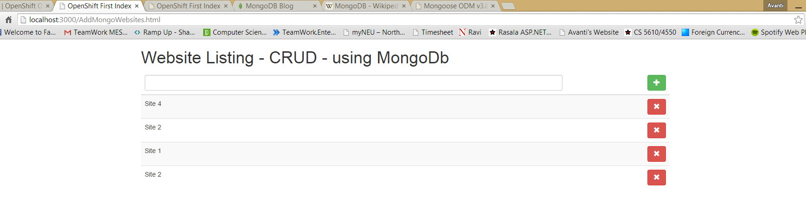

This link shows the output returned in json format
Click Here to see the Output

This Experiment is continuation of Experiment 33
MongoDB (from humongous) is a cross-platform document-oriented database.
Classified as a NoSQL database, MongoDB eschews the traditional table-based relational database structure in favor
of JSON-like documents with dynamic schemas (MongoDB calls the format BSON),
making the integration of data in certain types of applications easier and faster.
Released under a combination of the GNU Affero General Public License and the Apache License,
MongoDB is free and open-source software.
In this experiment I have added a functionalitty to add new data via JSON content in Mongodb database hosted on the Open Shift.
Description :
Above code snippet will post a json response to the mongodb server hosted on openshift with the given connection link.
where the websites will add the new data using http post method.
The above code snippet shows that we can use website.push to add each website individually
The above code shows that there is a dependancy of two modules that are
1. multer
used for parsing multipart/form-data
2. body-parser
used for for parsing application/json